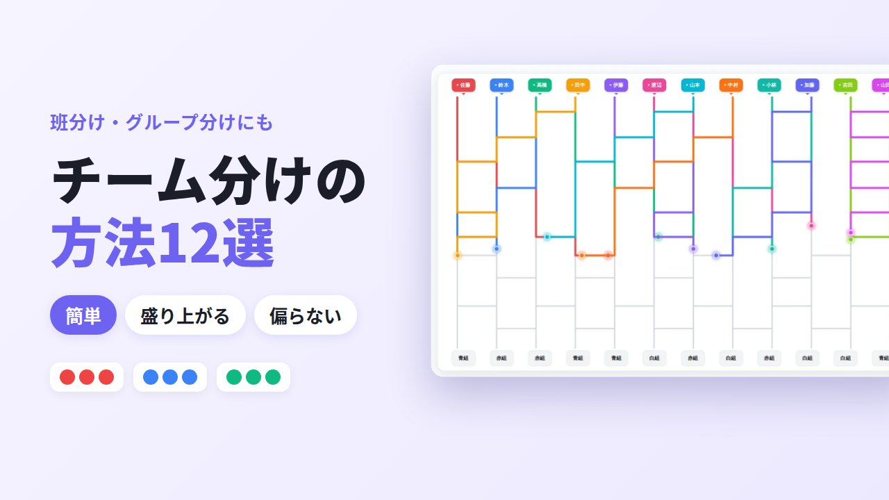
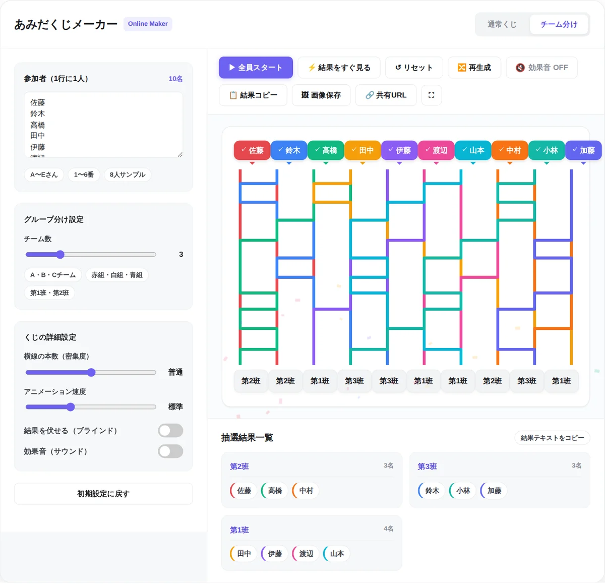
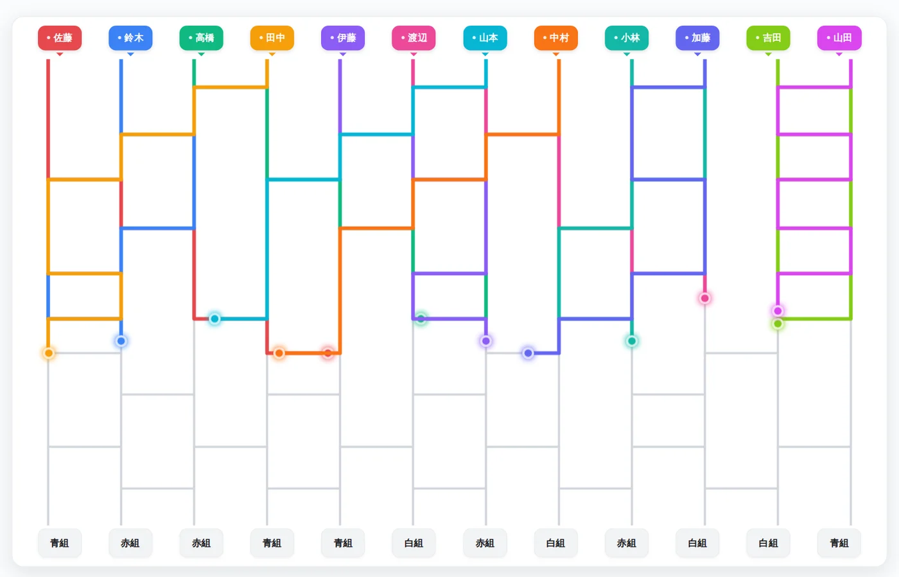
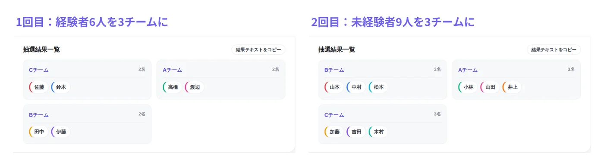
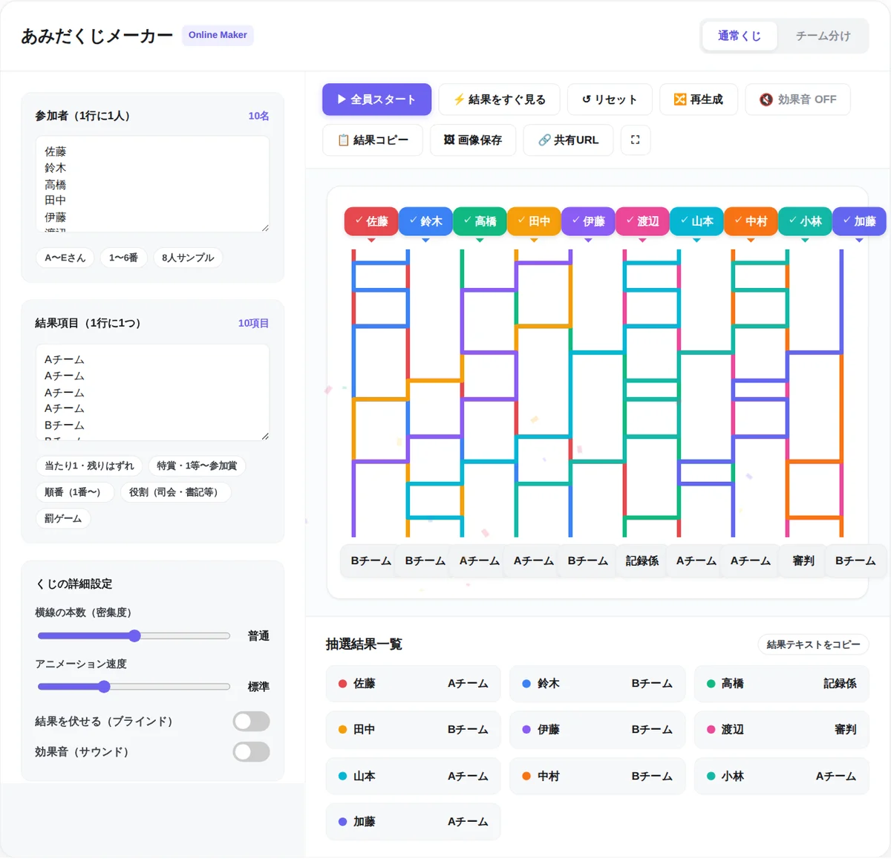

チーム分けの方法12選｜簡単で盛り上がる分け方と偏らないコツ

レクリエーションや授業、研修でチームを分けるとき、「毎回同じ分け方で飽きられる」「強い人が片方に固まった」「決め方に文句が出た」と困った経験はありませんか。
この記事では、道具なしですぐできる分け方から、初対面でも打ち解けやすい分け方、くじやツールを使ったランダムな分け方まで、12の方法を所要時間・準備物・偏りの出やすさで比べられる形にまとめました。後半では、実力差や男女比を偏らせないコツと、人数が割り切れないときの人数配分も解説します。
記事内で紹介している「あみだくじメーカー」は、当サイト（GraphRace Studio）が開発・運営している無料ツールです。道具を使わない方法も多数紹介しているので、場面に合わせて選んでください。
チーム分けの方法は大きく3タイプ
チーム分けの方法は、どこで偶然性を入れるかによって、次の3タイプに分けられます。
- その場で分ける：グーパーや番号を数える方法など。道具がいらず、数十秒で終わります。ただし人数がそろわなかったり、立つ位置で結果を選べてしまったりします
- ランダムに分ける：くじやツールを使う方法。誰の意図も入らないので、決め方への不満が出にくくなります。その代わり、実力差や男女比までは考えてくれません
- 条件をそろえて分ける：実力や学年のバランスを見て分ける方法。試合を接戦にしたいスポーツで役立ちます。ランダムと組み合わせると、公平さも保てます
12の方法の早見表
それぞれの方法を、同じ基準で比べました。「公平さ」は、分ける人や参加者の意図が結果に入り込みにくいかどうかの目安です。
| 方法 | 所要時間 | 準備物 | 人数がそろう | 公平さ | 向いている人数・場面 |
|---|---|---|---|---|---|
| 1. グーパー | 1〜3分 | なし | △ | ○ | 4〜12人の2チーム分け |
| 2. 番号を数える | 1分 | なし | ◎ | △ | 何人でも。研修の席の組み替え |
| 3. 誕生月で分ける | 2〜3分 | なし | △ | ○ | 子どもの集まり、交流会 |
| 4. 並んでから番号を振る | 3〜5分 | なし | ◎ | ○ | 10〜40人。自己紹介を兼ねたいとき |
| 5. 絵柄カードで仲間探し | 3〜5分 | カード | ◎ | ◎ | 保育、初対面の研修 |
| 6. 鳴き声・ジェスチャーで仲間探し | 3〜5分 | お題の紙 | ◎ | ◎ | 子ども会、アイスブレイク |
| 7. 共通点で集まる | 5分 | なし | △ | △ | 研修、交流会 |
| 8. 割り箸・紙のくじ | 5分 | 割り箸・紙 | ◎ | ◎ | 何人でも。学校、部活 |
| 9. トランプ | 2分 | トランプ | ◎ | ◎ | 4チームまで。飲み会、合宿 |
| 10. あみだくじ | 1〜3分 | Webツールや紙など | ◎ | ◎ | 2〜20人程度。全員の前で決めたいとき |
| 11. ポット方式 | 5分 | くじ・ツール | ◎ | ◎ | 実力差・男女比をならしたいとき |
| 12. ドラフト方式 | 5〜10分 | なし | ◎ | △ | スポーツで接戦にしたいとき |
横にスクロールできます
迷ったら、子どもや初対面の集まりは「盛り上がる分け方」、学校や研修で記録が必要なら「くじ・ツール」、勝ち負けのあるスポーツなら「ポット方式」を選ぶと失敗が少なくなります。
道具なしですぐできる分け方4選
何も準備していなくても、その場で始められる方法です。
1. グーパー（グーとパー）
- 人数：4〜12人程度（2チーム）。グーチョキパーにすれば3チーム
- 所要時間：1〜3分
- 偏りが出やすい点：人数がそろうまで何度もやり直しになりがちです。人数が多いほど、ぴったり半分になる確率は下がります
- コツ：「3回やってそろわなければ、多いほうから少ないほうへ、じゃんけんで負けた人が移る」など、やり直しの上限を先に決めておくと長引きません。掛け声は地域によって違うので、最初に全員でそろえておきます
2. 番号を数える
- 人数：何人でも
- 所要時間：1分
- 偏りが出やすい点：端から「1、2、3、1、2、3……」と数えるので、人数は必ずそろいます。ただし、並ぶ位置を自分で選べると、仲の良い人と同じ番号になるように立つことができてしまいます
- コツ：研修でテーブルを組み替えるときに便利です。隣に座っている人同士は必ず別の番号になるので、いつものメンバーが自然に分かれます
3. 誕生月で分ける
- 人数：10人以上
- 所要時間：2〜3分
- 偏りが出やすい点：「1〜4月」「5〜8月」「9〜12月」のように区切っても、人数はそろわないことが多いです
- コツ：「同じ誕生月の人を探す」こと自体が会話のきっかけになります。人数の差は、最後に多いチームから少ないチームへ移ってもらって調整します
4. 並んでから番号を振る
- 人数：10〜40人
- 所要時間：3〜5分
- 偏りが出やすい点：誕生日順や名前の五十音順に1列に並び、端から番号を数えて分けます。自分で位置を選べないので、番号を数える方法より公平です。身長順に並ぶと体格が各チームに散らばりますが、身長を気にする人もいるので、子どもや初対面の集まりでは誕生日順が無難です
- コツ：「話さずに身ぶりだけで誕生日順に並ぶ」というルールにすると、並ぶ過程がそのままアイスブレイクになります
盛り上がる・打ち解けやすい分け方3選
分けること自体をゲームにする方法です。初対面の研修や子どもの集まりでは、緊張をほぐすアイスブレイクにもなります。
5. 絵柄カードで仲間探し
- 人数：6人〜
- 所要時間：3〜5分
- 準備物：チームの数だけ絵柄を用意したカード（例：りんご・ばなな・ぶどうを4枚ずつ）
- コツ：伏せたカードを1枚ずつ引き、同じ絵柄の人を探して集まります。小さな子どもには色やイラスト、大人には「春・夏・秋・冬」や「都道府県の名産」など、会話が広がるお題にします。カードの枚数でチームの人数が決まるので、人数は必ずそろいます
6. 鳴き声・ジェスチャーで仲間探し
- 人数：8人〜
- 所要時間：3〜5分
- 準備物：動物の名前などを書いた紙
- コツ：紙に書かれた動物になりきり、鳴き声やしぐさだけで同じ動物の仲間を探します。「話してはいけない」というルールが笑いを生み、全員が体を動かすので一気に場が温まります。人前で声を出すのが苦手な人がいる場合は、ジェスチャーだけにします
7. 共通点で集まる
- 人数：10人〜
- 所要時間：5分
- 偏りが出やすい点：「好きな季節」「朝はパン派・ごはん派」などの質問で集まるので、人数はそろいません。仲の良い人同士が同じ答えを選ぶこともあります
- コツ：チームを決めるより、自己紹介のきっかけ作りとして使うのが向いています。集まったグループで一言ずつ話してもらい、最後に別の方法で本番のチームを決めると、交流と公平さを両立できます
くじ・ツールでランダムに分ける方法3選
誰の意図も入らないので、「なぜこのメンバー？」という不満が出にくい方法です。決め方で揉めそうな場面ほど効果があります。
8. 割り箸・紙のくじ
- 人数：何人でも
- 所要時間：作成5分、実施1〜2分
- 準備物：割り箸（先に色を塗る）、または番号を書いて折った紙
- コツ：チームの人数分だけ同じ色を用意すれば、人数は必ずそろいます。引く順番に不満が出たら、「全員が1本ずつ持ってから一斉に見る」ようにすると、先に引いた人が有利・不利ということがなくなります
9. トランプ
- 人数：4〜52人（4チームまで）
- 所要時間：2分
- 準備物：トランプ1組
- コツ：各チームの人数分だけ、ハート・スペードなどのマークをそろえて配ります。5チーム以上にしたいときは、マークではなく数字（A〜5など）でチームを分けます。数字の小さい人をキャプテンにするなど、役割決めにも使えます
10. あみだくじ
あみだくじは紙に線を書くだけでも作れますが、人数が多いと線を引いたりチーム名を書き込んだりするだけで時間がかかります。スマホやパソコンがあるなら、Webツールを使うのが手軽です。当サイトのあみだくじメーカーには「チーム分け」モードがあり、名前を入力してチーム数を選ぶだけで、均等な人数に振り分けられます。
- 「チーム分け」タブを選んで参加者を入力する1行に1人ずつ名前を入力します。2〜20人まで対応しています。
- チーム数とチーム名を選ぶスライダーで2〜6チームを選びます。チーム名は「A・B・Cチーム」「赤組・白組・青組」「第1班・第2班」から選べます。
- 「全員スタート」で抽選する光の玉が線をたどり、全員のチームが決まります。すぐに結果を知りたいときは「結果をすぐ見る」を押します。
- 結果をコピーして共有する画面の下にチームごとのメンバー一覧が出ます。「結果コピー」でLINEやSlackに貼り付けたり、「画像保存」でPNG画像として残したりできます。

会場にプロジェクターやモニターがあるなら、全画面表示にして参加者全員の前で抽選するのがおすすめです。自分の名前から出た光がどのチームにたどり着くかを全員で見守るので、決め方への不満が出にくく、それ自体がちょっとしたイベントになります。

ツールを選ぶときのポイント
- 名前がどこに送られるか：生徒や社員の本名を入れる場合は、入力内容がブラウザの中だけで処理され、サーバーに保存されないツールを選びます。あみだくじメーカーは、入力データを外部に送信しません
- 人数の上限：ツールによって、10人・20人・100人など上限が違います。あみだくじメーカーは20人までなので、それを超える場合の分け方はよくある質問で紹介しています
- 公平さの仕組み：手書きのあみだくじは、横線が少ないと真下のゴールに落ちやすいという偏りがあります。あみだくじメーカーでは、下に並ぶ結果の順番もくじを作るたびにシャッフルしているので、どの位置の人も各チームに入る確率は同じです。詳しくはあみだくじの確率は公平じゃない？当たりやすい場所と必勝法を計算で検証で解説しています
実力差・男女比を偏らせない分け方2選
完全なランダムには、「経験者が片方のチームに固まる」ことを防げないという弱点があります。スポーツやチーム対抗のゲームでは、試合が一方的になると全員がつまらなくなってしまいます。そこで使えるのが、次の2つの方法です。
11. ポット方式（グループごとにくじを引く）
サッカーのワールドカップの組み合わせ抽選でも使われている方法です。参加者を実力や属性で「ポット（グループ）」に分け、ポットごとに別々にくじを引きます。どのチームにも各ポットから同じ人数が入るので、ランダムの公平さを保ったまま、偏りだけを防げます。
たとえば、経験者6人と未経験者9人の合計15人を3チームに分ける場合は、次のように進めます。
- 参加者をポットに分ける経験者6人を1つ目のポット、未経験者9人を2つ目のポットにします。
- 1つ目のポットでくじを引く経験者6人だけで、3チームに分けます。各チームに経験者が2人ずつ入ります。
- 2つ目のポットでくじを引く未経験者9人だけで、同じ3チームに分けます。各チームに未経験者が3人ずつ入ります。
- 2回の結果を合わせるどのチームも「経験者2人＋未経験者3人」の5人になります。

ポット方式は、実力差以外にも応用できます。
- 男女比をそろえる：男性と女性で別々のポットにします
- 学年をまぜる：学年ごとにポットを作ると、どのチームにも上級生と下級生が入ります
- キャプテンを散らす：リーダー役の人だけでポットを作り、チーム数と同じ人数にすると、各チームに1人ずつ入ります
- 離したい人同士を別のチームにする：同じチームにしたくない人たちを、チーム数以下の人数で1つのポットにまとめます。1つのポットからは1チームに1人ずつしか入らないので、必ず別々のチームになります
あみだくじメーカーのチーム分けモードでは、人数が割り切れないとき、1つ目のチーム（AチームやA組）から順に1人多くなります。そのため、2つのポットの両方で余りが出ると、同じチームが2回とも1人多くなり、合計で2人の差がついてしまいます。
これを防ぐには、1つ目のポットの人数をチーム数で割り切れる人数にそろえます（境目の人を2つ目のポットに移すなど）。どうしても両方で余りが出る場合は、2回目だけ「通常くじ」モードに切り替え、結果項目に「Bチーム」「Cチーム」のようにチーム名を直接入力すると、1人多くするチームを自分で決められます。
12. ドラフト方式（キャプテンが交互に指名する）
- 人数：8〜20人程度
- 所要時間：5〜10分
- やり方：各チームのキャプテンを先に決め、順番にメンバーを1人ずつ指名します。実力を知っている人が選ぶので、チームの戦力は近くなりやすいです
- 注意点：最後まで名前を呼ばれない人は、みんなの前で「選ばれなかった」ことになり、傷つく場合があります。子どもの集まりや初対面の場では避け、使う場合も後半はくじに切り替えるなどの配慮をします。指名の順番は「1→2→2→1」のように折り返すと、最初に選ぶチームが有利になりすぎません
「ランダムにしてから少しだけ調整する」のはあり？
くじで分けたあとに、明らかに偏っているところだけを入れ替える方法です。手軽ですが、調整した人の意図が入るので、やり方によっては「結局、先生（幹事）が決めている」と受け取られます。調整するなら、「経験者が3人以上固まったら1人だけ入れ替える」のように、基準をくじの前に全員に伝えておくのがポイントです。最初から偏りが予想できるなら、あとで調整するより、ポット方式で分けたほうが透明性は高くなります。
同じメンバーが続かないようにするには
ランダムに分けると、偶然、前回と似たメンバーになることがあります。毎週の授業や練習のように何度も分ける場合は、前回の結果を記録しておき、前回同じチームだった人同士を別のポットに入れると、組み合わせが入れ替わりやすくなります。あみだくじメーカーの「結果コピー」を使えば、結果をテキストでそのまま保存できます。
人数が割り切れないときの人数配分
参加人数がチーム数で割り切れないときは、チーム間の人数差を1人以内にするのが基本です。「参加人数 ÷ チーム数」の商がチームの基本人数になり、余りの数だけ1人多いチームができる、と考えれば計算できます。
たとえば23人を4チームに分けるなら、23 ÷ 4 = 5 余り 3 なので、「6人・6人・6人・5人」です。10人を3チームなら、10 ÷ 3 = 3 余り 1 で「4人・3人・3人」になります。
「チーム数を決める」か「1チームの人数を決める」か
- チーム数を先に決める：コートの数や対戦の組み合わせが決まっているスポーツ、紅白戦など。上の表のように、人数は1人差の範囲で調整します
- 1チームの人数を先に決める：「4人班」のように話し合いやすい人数が決まっているグループワーク、テーブルの席数が決まっている会食など。参加人数 ÷ 1チームの人数（切り上げ）がチーム数になります。たとえば4人班で23人なら6班になり、「4・4・4・4・4・3」です
余った人の扱い
人数差がある対戦ゲームでは、人数の少ないチームが不利になることがあります。その場合は、余った人に審判・記録係・タイムキーパーをお願いし、試合ごとに交代する方法があります。
あみだくじメーカーの「通常くじ」モードを使うと、結果項目に好きな名前を入力できるので、チームの人数を自由に決められます。たとえば10人のうち、4人ずつの2チームと審判・記録係を1人ずつ決める、といった分け方も1回のくじで済みます。

場面別のおすすめの分け方
| 場面 | おすすめの方法 | 気をつけること |
|---|---|---|
| 保育園・幼稚園 | 絵柄カードで仲間探し、色を塗った割り箸のくじ | ルールは1つだけにし、集まる場所を先に示しておく。仲の良い子と離れて泣いてしまう子には、次の活動で一緒になれることを伝える |
| 小学校のクラス | くじ、あみだくじをスクリーンに映して決める、ポット方式 | 班活動が続く場合は、先生が配慮した分け方とくじを使い分ける。毎回くじにするなら、その場で全員に見せて透明性を保つ |
| 部活・スポーツ | ポット方式、ドラフト方式（後半はくじに切り替え） | 経験者・学年・ポジションをポットに分け、試合が一方的にならないようにする |
| 会社の研修・グループワーク | 番号を数える、並んでから番号を振る、ポット方式（部署ごと） | 同じ部署の人が固まらないよう、部署ごとにポットを作る。初対面なら、共通点で集まる方法を自己紹介に使ってから本番のチームを決める |
| 飲み会・イベント | トランプ、あみだくじをスクリーンに映して決める | チーム分け自体を余興の1つとして見せると盛り上がる。チーム対抗ゲームの例は忘年会で盛り上がるゲーム・余興15選で紹介しています |
横にスクロールできます
チームが決まったあとに勝ち抜き戦を行う場合は、動くトーナメント表の作り方で紹介しているトーナメント表アニメーターを使うと、対戦カードと勝ち上がりを画面で共有できます。
不満が出ないチーム分けのコツ
- 決め方を先に宣言する：「今日はくじで決めます」と最初に伝えます。結果が出てから決め方を変えると、不満の原因になります
- やり直しの条件を先に決めておく：「経験者が3人以上固まったらやり直す」など、やり直してよい条件を事前に伝えます。結果を見てから「もう1回」とすると、特定の人に都合のよい結果を選んでいるように見えます
- 全員の前で結果を出す：分ける人が裏で決めるより、目の前でくじを引く、画面に映して抽選するほうが納得感が高まります
- 人が選ぶ部分を減らす：ランダムなくじは、力量や人間関係を考えない代わりに、誰の意図も入りません。「誰かが決めた」ではなく「くじがこうなった」と言えることが、そのまま納得感につながります
- 分けたあとのフォローをする：人数や実力に差が出たチームには、先攻を譲る、ハンデをつけるなどで調整します
よくある質問（FAQ）
いちばん公平なチーム分けの方法はどれですか？
誰の意図も入らないという意味では、全員が同時に引くくじや、画面に映して行うあみだくじなどのランダムな方法が公平です。ただし、実力差までならしたい場合は、実力ごとにグループを分けてからくじを引く「ポット方式」がおすすめです。ランダムの公平さを保ったまま、チームの戦力をそろえられます。
20人を超える場合はどう分ければいいですか？
割り箸やトランプのくじ、並んでから番号を振る方法なら、人数の上限はありません。あみだくじメーカー（最大20人）を使う場合は、参加者を20人以下のポットに分けて、同じチーム名で2回抽選します。このとき、1回目のポットの人数をチーム数で割り切れる人数にそろえておくと、合計の人数差が1人以内に収まります。表計算ソフトで名前の横にRAND関数で乱数を入れ、並べ替えてから上から順に番号を振る方法でも、大人数をランダムに分けられます。
仲の良い人同士や、相性の悪い人同士を離すにはどうすればいいですか？
離したい人たちを、チーム数以下の人数で1つのポットにまとめ、そのポットだけで先にくじを引きます。1つのポットからは各チームに1人ずつしか入らないので、必ず別々のチームになります。くじのあとで入れ替えるより、周りから見て自然です。
2人1組のペアを作るにはどうすればいいですか？
同じ番号や同じ絵柄のカードを2枚ずつ用意して引く方法が簡単です。あみだくじメーカーの「通常くじ」モードなら、結果項目に「ペア1」「ペア1」「ペア2」「ペア2」……と2つずつ入力すると、最大20人（10組）までペアを作れます。
オンラインの授業や会議でもチーム分けできますか？
できます。ZoomやMicrosoft Teamsのブレイクアウトルームには、参加者を自動で振り分ける機能があります。振り分けの過程も見せたい場合は、あみだくじメーカーの画面を共有して抽選し、その結果に合わせてルームを割り当てると、参加者全員が決まり方を確認できます。
毎回同じようなメンバーにならないようにするには？
前回の結果を記録しておき、前回同じチームだった人同士を別のポットに入れてからくじを引くと、組み合わせが入れ替わりやすくなります。研修でテーブルを組み替える場合は、各テーブルの中で番号を数え、同じ番号の人同士で新しいグループを作ると、前のメンバーと必ず別れられます。
まとめ
チーム分けは、場面に合った方法を選ぶだけで、準備の手間も揉めごとも大きく減らせます。
- すぐ分けたいなら番号を数える・並んでから番号を振る。人数が必ずそろう
- 初対面や子どもの集まりなら、絵柄カードや鳴き声の仲間探しで分けること自体をアイスブレイクにする
- 決め方で揉めそうなら、くじやツールで全員の前でランダムに決める
- 実力差・男女比・相性を考えたいなら、ポット方式でグループごとにくじを引く
- 割り切れないときは人数差を1人以内にし、余った人には審判や記録係をお願いする